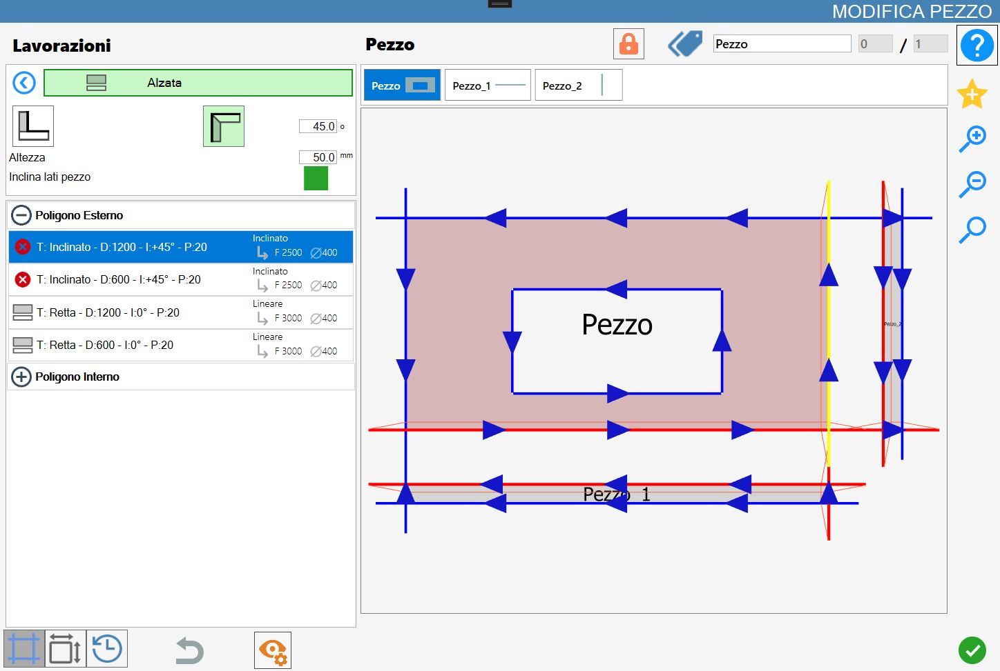

Cette fonction permet de créer une pièce rectangulaire à partir du côté d’un objet afin d’obtenir un relevé.

Types d’usinage
Pour utiliser cet usinage, il faut d’abord choisir l’un des deux modes disponibles en sélectionnant le bouton correspondant :
 | Mode Revêtement |
 | Mode Relevé |
Paramètres
Hauteur | Hauteur du relevé qui sera inséré lors de l’exécution de l’usinage. |
Incliner côtés pièce | Si cette option est activée, des coupes inclinées sont automatiquement insérées lorsqu’il existe des coupes susceptibles d’entrer en collision. |
Paramètre supplémentaire mode relevé
Degrés | Ce paramètre est actif uniquement lorsque le mode Revêtement est sélectionné. |
Exécution de l’usinage
Il est possible d’appliquer l’usinage en appuyant sur le bouton situé à gauche de la coupe appropriée dans la liste des polygones.
Une icône rouge avec un « X » indique que l’usinage ne peut pas être appliqué à la coupe souhaitée.
En cliquant directement sur la coupe dans l’aperçu, ou lorsque cela est possible sur l’icône située à gauche de la coupe dans la liste correspondante à gauche, l’usinage sélectionné est exécuté.
Chaque relevé ou raccordement appliqué avec succès au matériau entraîne la mise à jour de l’aperçu et de la liste des coupes à gauche.
Chaque pièce créée avec cette fonction est ajoutée à la liste des pièces de Parametrix.
Les nouvelles pièces introduites sont également ajoutées à une liste située juste au-dessus de l’aperçu dans le panneau « Modifier pièce » ;
Cette liste permet de sélectionner la pièce du bloc souhaité afin d’afficher son aperçu et ses coupes dans la liste des coupes.
Exécution du Revêtement
L’application de deux revêtements est maintenant présentée lorsque le paramètre « Incliner côtés pièce » est activé ou désactivé.
Un premier revêtement d’une hauteur de 1000 mm est appliqué sur le côté inférieur du rectangle, puis un second revêtement sur le côté droit de celui-ci.
Incliner côtés pièce désactivé
Aucun côté incliné n’apparaît dans le résultat obtenu et les coupes de la pièce d’origine ne sont pas modifiées dans la liste des coupes :

Incliner côtés pièce activé
En cas d’alignement des sommets des nouvelles pièces, à savoir Pezzo_1 et Pezzo_2, les côtés ayant un sommet commun et non adjacents à la pièce d’origine sont remplacés par des coupes inclinées :

Exécution du Relevé
L’application de deux relevés est maintenant présentée lorsque le paramètre « Incliner côtés pièce » est activé ou désactivé.
Un premier relevé d’une hauteur de 50 mm est appliqué sur le côté inférieur du rectangle, puis un second relevé sur le côté droit de celui-ci.
Dans ce mode, la pièce d’origine (Pezzo) et chaque éventuelle pièce générée (Pezzo_1 et Pezzo_2) se voient automatiquement appliquer des coupes inclinées sur tous les côtés adjacents entre eux.
L’angle d’inclinaison est déterminé par le paramètre degrés.
Incliner côtés pièce désactivé
Dans ce cas, les côtés adjacents entre la pièce d’origine et les nouvelles pièces créées sont automatiquement remplacés par des coupes inclinées.
L’inclinaison de la coupe dépend du paramètre Degrés défini.

Incliner côtés pièce activé
Comme dans le cas précédent, des coupes inclinées sont insérées sur les coupes adjacentes aux différentes pièces et l’inclinaison dépend de la valeur du paramètre Degrés.
De plus, en activant le paramètre « Incliner côtés pièce », comme dans le cas des revêtements, si les nouvelles pièces présentent un alignement des sommets, les côtés ayant un sommet commun, non adjacents à la pièce d’origine, sont automatiquement remplacés par des coupes inclinées.

Division des pièces
Lorsqu’une ou plusieurs pièces ont été associées à la pièce sélectionnée au moyen d’usinages de Relevé ou de Revêtement, un bouton spécifique de gestion des pièces associées apparaît dans la partie supérieure du panneau « Modifier pièce ».
 | Diviser pièces |
|---|
Avant la division, les pièces associées sont gérées de manière unifiée dans la zone de travail. Dans cet état, un bloc composé de plusieurs éléments est créé ; ces éléments subissent les mêmes opérations sans être encore séparés.
Par exemple, lorsque la pièce d’origine, un relevé ou un revêtement est ajouté à la zone de travail depuis la liste des pièces, tous les autres éléments associés sont également insérés automatiquement.

Lorsque le bouton Diviser pièces, est actionné, chaque pièce générée au moyen d’un relevé ou d’un revêtement est dissociée de la pièce d’origine et traitée comme un élément indépendant.
Ensuite, la liste des pièces associées, auparavant visible au-dessus de l’aperçu dans le panneau Modifier pièce, ainsi que le bouton de division des pièces disparaissent de l’interface.
Au moment de la division, chaque pièce conserve les coupes inclinées obtenues lors de la génération par relevé ou revêtement, ainsi que toutes les personnalisations et modifications effectuées alors qu’elle était encore associée à la pièce d’origine.
L’image suivante permet d’observer la gestion distincte des différentes pièces qui appartenaient auparavant au même bloc.
En particulier, seules deux des trois pièces ont été insérées dans la zone de travail (la pièce d’origine et la première pièce générée par l’application du premier relevé), et la seconde pièce a été repositionnée et tournée sans provoquer aucune interférence avec la pièce d’origine :